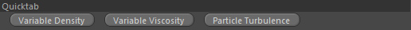

Quicktab

Variable Density
Creates the necessary nodes to user-define variable density and also links the newly generated nodes in the appropriate link fields (mainly Characteristica tab).
The following nodes are generated:
1. Scalar Grid Channel - holds the density values
2. POP::ParticleData To Grid - to write values from particles into the scalar channel
3. Container::Channel/Value - to tell the POP into which channel and which value to write
Variable Viscosity
Creates the necessary nodes to user-define variable viscosity and also links the newly generated nodes in the appropriate link fields (mainly Characteristica tab).
The following nodes are generated:
1. Scalar Grid Channel - holds the viscosity values
2. POP::ParticleData To Grid - to write values from particles into the scalar channel
3. Container::Channel/Value - to tell the POP into which channel and which value to write
Particle Turbulence
Creates the necessary nodes to apply turbulences from vorticity particles and also links the newly generated nodes in the appropriate link fields (mainly Dynamics::Grid Forces) and among each other.
The following nodes are created:
1. Emitter::Particle In Volume - to generate Vorticity particles
2. Settings::Particle Emission - Emission setting
3. Alignment - defines the initial vorticity direction
4. Duration - defines duration of particle emission
5. CS::Noise - to vary the vorticity particle emission
6. POP::Advection - to let the vorticity particles be transported passively by the liquid motion
7. GF::Particle Turbulence - the actual turbulence force calculated from the vorticity particles
8. POP::Converter - to kill vorticity particles
9. CS::Volume - used by above POP::Converter to kill vorticity particles only outside the liquid body volume